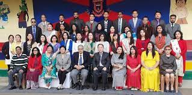
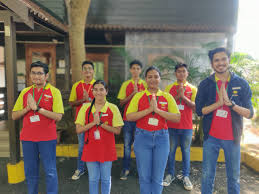

|  | There is an immediate need to inculcate in our children a concern to the ever rising problems of the environment they live in as they are the future of the world. So we hope to inculcate all the values in our children along with their holistic development so that they grow up to be responsible and passionate individuals. Along with this we also aim at developing our children with values so that they learn about their roots and grow along with it. Sports and physical activities play a major role in developing skills which would be helpful in life always and focusing on them at this tender age is the most important aspect of quality education. |
|---|---|
Application Based Education (ABE) When ABE is infused with problem solving, critical thinking & communication skills, we achieve results that are leaps & bounds ahead of the traditional techniques. Our experience proves that this approach not only helps a student grasp the subject quicker, but also facilitates in faster brain and sensory development. Benjamin Franklin once said, “Tell me and I forget, teach me and I may remember, involve me and I learn.” And we swear by this approach. Our learners have shown tremendous growth when the subjects are Activity Based. So, at Sunshine, every individual student has the freedom to conduct their own research, keeping in mind that the result will always lead to an open outcome. The philosophy of Sunshine Worldwide School has its core in the ideology of competence building without competition, making our school ONE OF A KIND. We encourage competition with oneself, to develop a structured, positive growth focused on self-improvement |
 |
|
|